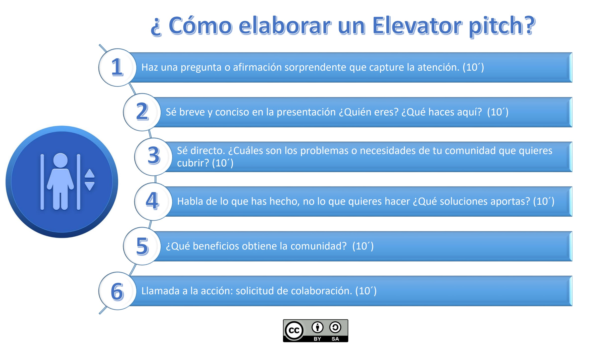

Solicitud de autorización
Para desarrollar las sesiones del taller será necesario contar con la aprobación del equipo directivo para usar las instalaciones y los recursos digitales del centro. Para ello, el alumnado deberá realizar una solicitud justificada de un espacio óptimo con ordenadores y conexión a internet (wifi) para desarrollar el taller.
El alumnado deberá exponer su propuesta, captando la atención del equipo directivo con argumentos breves y muy directos, a través de un discurso oral con apoyo de un recurso audiovisual. Cada equipo elaborará su exposición oral con la técnica Elevator Pitch y la duración no podrá superar el minuto de duración. Todos los miembros del equipo tomarán la palabra, por lo que deberán realizar un discurso de forma coordinada para seguir una línea argumental coherente sin romper el ritmo del mismo cuando se cambie de orador, procurando no superar el tiempo asignado.
Las instrucciones a seguir serán:
- Captar su atención por medio de datos y preguntas impactantes recabadas de las conclusiones del estudio de casos sobre cómo se enfrentan los mayores al uso de las tecnologías para presentar la problemática y justificar la propuesta.
- Exponer qué hacer y para qué mediante la presentación de la propuesta destacando los puntos fuertes de la misma:
- Problemática que pretende resolver (brecha digital generacional).
- Barreras a reducir (inseguridad, miedo, desconocimiento, usabilidad...).
- Posibles beneficios (autonomía, calidad de vida, seguridad, interacción…).
- Presentar necesidades y solicitar colaboración de manera abierta y directa.
Se proporcionará al alumnado un recurso didáctico de ayuda para la elaboración del Elevator Pitch (anexo 4)

En clase, cada equipo presentará su discurso al resto de equipos, que evaluarán su intervención siguiendo la diana de coevaluación (anexo 8). El equipo que obtenga mayor puntuación será el encargado de hacer la propuesta al equipo directivo del centro.
Para finalizar, el alumnado completará su diario de sesiones (anexo 9), de manera individual, para incluirlo en el portfolio digital de la materia en formato blog, pódcast o videoblog.